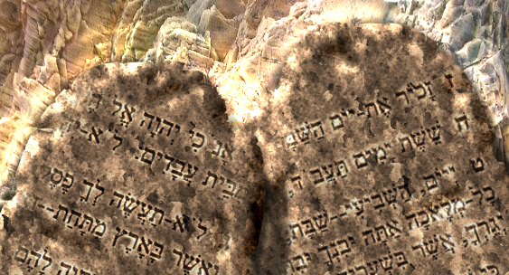

4. Na czym polega istota Przymierza Boga z Izraelem i czy w dzisiejszych czasach ma to jakieś znaczenie?
Przymierze – to umowa zawarta pomiędzy stronami.
W języku hebrajskim ‘przymierze’ to rzeczownik rodzaju żeńskiego ‘berit’, który pochodzi od słowa ‘barah’ (ciąć).
Skąd związek tych, pozornie nie mających ze sobą nic wspólnego słów? O tym za chwilę.
Biblia podaje wiele przykładów przymierzy, jakie zawierali ze sobą ludzie, np. Abraham z Abimelechem (Rodz. 21:22-32), Jakub z Labanem (Rodz. 31:44, 50-54), Dawid z Jonatanem (1 Sam. 18:3-4, 20:42, 23:18). Każde przymierze określało wzajemne zobowiązania.
Poniższy opis dotyczy niektórych elementów umów zawieranych w starożytnej kulturze Wschodu pomiędzy ludźmi, stosowany także przez samego Boga w Jego przymierzach zawieranych z ludźmi.
W starożytnych czasach zawieranie przymierza miało o wiele poważniejszy wymiar niż w przypadku współczesnych umów. Przymierze było aktem niezwykłej wagi. Zawartego przymierza nie można było zerwać. Było nieodwołalne! Natomiast jego pogwałcenie skutkowało poważnymi konsekwencjami, aż do utraty życia włącznie. Dlatego też decyzję o zawarciu takiego aktu należało bardzo głęboko rozważyć.
Kiedy zawierano przymierze, zawsze była przy tym składana ofiara ze zwierząt. Ich krew rozlewano wokoło, a zwierzęta rozcinano na połowy układając je tak, żeby było pomiędzy tymi połówkami przejście. Następnie, przechodząc pomiędzy tymi połówkami zwierząt uczestnicy przymierza wypowiadali jego warunki wraz z błogosławieństwami za trwanie w nim oraz przekleństwami w przypadku jego złamania. W ten sposób podkreślano rangę przymierza – było to przymierze na śmierć i życie. Miało to oznaczać, że w razie pogwałcenia przymierza podzielą los zwierząt pomiędzy którymi przechodzą. Podzielone połówki obrazowały zobowiązania każdej ze stron.
Na koniec urządzano ucztę przymierza jako wyraz więzi łączącej odtąd uczestników przymierza. Od tej pory mogli zacząć nazywać siebie przyjaciółmi. Dlatego właśnie Abraham mógł być nazwany przyjacielem Boga (Jakuba 2:23).
Znając te fakty, możemy zrozumieć jak wielkie znaczenie miało przymierze zawarte pomiędzy Bogiem a Abrahamem, które zawierało właśnie te elementy (1 Mojż. 15:10,17-18, por. Jer. 34:18).
Mając chociażby tak skromną wiedzę na ten temat, już można docenić wagę używanego w Biblii słowa: ‘przymierze’. Istnieje jednak jeszcze kilka innych ważnych czynników, które podkreślają istotę i niezwykłość przymierza jakim jest umowa pomiędzy samym Bogiem, Władcą Wszechświata a Izraelem.
W starożytności funkcjonowały dwa rodzaje przymierzy.
W pierwszym przypadku, kiedy obie strony były równe pod względem godności. Miały wówczas równorzędne prawa i zobowiązania.
W drugim przypadku, jedna ze stron była potężniejsza i w zamian za wierną i lojalną służbę zapewniała tej słabszej swoją ochronę i wsparcie. W takim układzie silniejszy partner przedstawiał warunki, które z uwagi na jego pozycję nie mogły być negocjowane. Wybór był taki: przyjąć przedstawione warunki w całości lub odrzucić je całkowicie i nie zawrzeć przymierza.
Nie trudno się domyślić, że w relacji Bóg – człowiek ma zastosowanie ten drugi rodzaj przymierza.
Jak już wyżej wspomniano, każde przymierze polegało na obustronnych zobowiązaniach. Przyjrzyjmy się kilku takim zawartym przez Boga przymierzom:
Przymierze Boga z Noem i jego potomstwem (1 Mojż. 9:1-17). Obustronne zobowiązania: Bóg – werset 11, ludzie – wersety 3-7. Warto zapoznać się z tymi warunkami, gdyż każdy z nas zobowiązany jest do ich przestrzegania. Wszyscy bowiem jesteśmy potomkami Noego.
Przymierze Boga z Abrahamem i jego potomstwem (1 Mojż. 17:1-22). Obustronne zobowiązania: Bóg – wersety 4-8, 19-21, Abraham i jego potomstwo – wersety 9-14. O tym, z jak wielką powagą traktował Abraham zawarte przymierze niech świadczy fakt, że natychmiast zabrał się do wypełnienia swojej części zobowiązań, jeszcze tego samego dnia (1 Mojż. 17:23)!
Przymierze Boga z Dawidem (2 Sam. 7:5-6, 8-16, Ps. 89:4-5). Obustronne zobowiązania: Bóg – wersety 12-16, Dawid – 2 Sam. 5-6, 1 Król. 8:17-20, 1 Kron. 22:1-11.
Przymierze Boga z Izraelem.
To przymierze jedyne w swoim rodzaju. Nigdy bowiem w historii ludzkości nie zdarzyło się, żeby Bóg zawarł przymierze z całym narodem.
„Zapytaj się dawnych czasów, które były przed tobą od dnia, kiedy stworzył Bóg na ziemi człowieka, i od krańca aż po kraniec niebios, czy stało się już coś tak wielkiego albo czy słyszano kiedy o czymś podobnym? Czy kiedykolwiek jakiś lud słyszał głos Boga przemawiającego spośród ognia, jak ty słyszałeś, i pozostał żywy? Albo czy spróbował jakiś bóg przyjść i wziąć sobie jakiś naród spośród innego narodu przez doświadczenia, znaki i cuda oraz przez wojnę, ręką możną i wyciągniętym ramieniem, przez wielkie i straszne czyny, jak to wszystko, co Pan, wasz Bóg, na oczach twoich uczynił dla was w Egipcie?” (5 Mojż. 4:32-34, BW)
Bóg w geście miłości przyszedł z pomocą temu ludowi w chwili, gdy był bardzo udręczony trwającą ponad 400 lat niewolą w Egipcie (2 Mojż. 2:23-25). Gdyby nie inicjatywa Boga, nie mieliby żadnej możliwości uwolnienia się spod potężnego i okrutnego jarzma faraona, pozostając na zawsze jego niewolnikami.
Podstawowe warunki Przymierza Boga z Izraelem (2 Mojż. 19:5-6).
Bóg: „będziecie szczególną moją własnością pośród wszystkich ludów”, „będziecie mi królestwem kapłańskim i narodem świętym.”
Izrael natomiast będzie: „pilnie słuchać i przestrzegać przymierza”.
Unikatowość tego Przymierza została tak opisana:
„A który lud jest jak twój, jak Izrael, jedyny naród na ziemi, dla którego Bóg wyruszył, by go sobie wykupić jako lud, aby mu nadać imię i dokonać dla nich tych wielkich i strasznych rzeczy, wypędzając narody i ich bogów sprzed twojego ludu, który sobie wykupiłeś z Egiptu. I ustanowiłeś sobie swój lud izraelski jako swój lud na wieki, a Ty, Panie, jesteś ich Bogiem.” (2 Sam. 7:23-24,*BW)
Szczegółowe warunki i elementy tego Przymierza oraz ich znaczenie będą tematem dalszych rozdziałów, teraz skupmy uwagę na tym, w jaki sposób Izraelici traktowali zawarte z nimi przymierze.
W świetle powyższych informacji wiemy, iż nawet w stosunkach ludzkich wartość przymierza była na wagę życia, a tutaj mamy do czynienia z przymierzem zawartym z samym Bogiem, Władcą całego wszechświata, który ten lud bierze sobie pod szczególną opiekę.
„Wtedy Mojżesz spisał wszystkie słowa Pana, a wstawszy wcześnie rano, zbudował ołtarz u stóp góry i postawił dwanaście pomników dla dwunastu plemion izraelskich. Polecił też młodzieńcom z synów izraelskich złożyć ofiarę całopalenia, a ci zarżnęli cielce na rzeźną ofiarę pojednania dla Pana. Potem wziął Mojżesz połowę krwi i wlał do czaszy, a drugą połowę krwi wylał na ołtarz. Następnie wziął Księgę Przymierza i głośno przeczytał ludowi, ten zaś rzekł: Wszystko, co powiedział Pan, uczynimy i będziemy posłuszni. Wziął też Mojżesz krew i pokropił lud, mówiąc: Oto krew przymierza, które Pan zawarł z wami na podstawie wszystkich tych słów. I wstąpił Mojżesz i Aaron, Nadab i Abihu oraz siedemdziesięciu ze starszych Izraela na górę, i ujrzeli Boga Izraela, a pod jego stopami jakby twór z płyt szafirowych, błękitny jak samo niebo.” (2 Mojż. 24:4-10,*BW)
Wypowiadając pod górą Synaj znamienne słowa: „Wszystko, co powiedział Pan, uczynimy i będziemy posłuszni” (w. 7) Izrael przyjął warunki Przymierza.
Jak wspomniano na wstępie, przystąpienie do przymierza było aktem nieodwracalnym. Przymierza nie można było zerwać. Natomiast za jego pogwałcenie groziły surowe konsekwencje, ze śmiercią włącznie, a w przypadku Izraela byłoby to ostateczne wytracenie całego narodu (5 Mojż. 6:14-15). Dlatego każda pojedyncza osoba, która złamała zasady zawartego przymierza miała być ukarana śmiercią (5 Mojż. 17:2-7, 5 Mojż. 13:7-11), w przeciwnym wypadku przekleństwo przymierza przeniosłoby się na cały naród (4 Mojż. 25:6-11, Joz. 7:5, 10-12, 24-25). Stąd właśnie tak zdecydowana postawa lewitów, którzy na rozkaz Mojżesza nie wahają się zgładzić każdego, kto to przymierze zbezcześcił (2 Mojż. 32:26-29).
Żeby cały Izrael i każdy jego członek osobiście oraz ich kolejne pokolenia znali postanowienia Przymierza, nakazane było regularne odczytywanie jego warunków (5 Mojż. 31:10-13), łącznie z błogosławieństwami oraz przekleństwami będącym skutkiem jego nieprzestrzegania (5 Mojż. 11:26-28, 5 Mojż. 28:1-69).
O ile każde przymierze wymagało obustronnego dopełnienia warunków umowy, nie było żadnej obawy o złamanie przymierza ze strony Boga. Co natomiast z Izraelem?
Wielokrotnie zdarzało się, że łamał zasady tego Przymierza, co jednak nie oznaczało jego zerwania. Jak podkreślono powyżej, nie było takiej opcji. Mogły być jedynie z tego tytułu konsekwencje, ale przymierze obowiązywało dalej. Stąd odnawianie przymierza za każdym razem, kiedy doszło do jego pogwałcenia (2 Mojż. 32:30, 34:9-10, 2 Król. 23:2-3, Neh. 10:1-40, szczególnie w. 30).
WNIOSKI:
1. Pojęcie istoty przymierza, zwłaszcza przymierza z Bogiem, uczy nas szacunku do Nowego Przymierza i weryfikuje nasze podejście do niego. Tak jak w każdym przymierzu musimy dobrze znać obustronne jego warunki, ze szczególnym uwzględnieniem naszych zobowiązań wobec Boga oraz konsekwencjami ich niedotrzymania.
2. Chociaż do zawarcia przymierza nikt nie może zmusić, decydując się na jego zawarcie nie można się już z niego wycofać. Oznacza to, że przymierze Boga z Izraelem nadal jest aktualne, o czym świadczy chociażby fakt istnienia narodu żydowskiego. W przeciwnym wypadku zgodnie z warunkami przymierza, byłby wytępiony zupełnie z powierzchni ziemi (5 Mojż. 6:14-15). Ten natomiast przetrwał wszystkie próby czasu, chociaż jak zapowiedziało Pismo Święte została ocalona jego resztka (2 Król. 19:30, Ezdr. 6:15, Izaj. 10:21-22).
3. W trosce o trwałość zawartego Przymierza, Bóg dał obietnicę zawarcia z Izraelem Nowego Przymierza, które będzie włożone w ich serca:
„Oto idą dni - mówi Pan - że zawrę z domem izraelskim i z domem judzkim nowe przymierze. Nie takie przymierze, jakie zawarłem z ich ojcami w dniu, gdy ich ująłem za rękę, aby ich wyprowadzić z ziemi egipskiej, które to przymierze oni zerwali, chociaż Ja byłem ich Panem - mówi Pan - lecz takie przymierze zawrę z domem izraelskim po tych dniach, mówi Pan: Złożę mój zakon w ich wnętrzu i wypiszę go na ich sercu. Ja będę ich Bogiem, a oni będą moim ludem.” (Jerem. 31:31-33, BW, por. Hebr. 8:8-12)
Dzięki temu już nigdy więcej nie powtórzą się sytuacje z niechlubnej przeszłości Izraela.
W tym miejscu nasuwa się pytanie: Czy Nowe Przymierze ma dotyczyć Izraela, czy chrześcijan?
Odpowiedź już w kolejnym rozdziale.
----------------------
* wytłuszczenia w tekstach biblijnych - autor opracowania Copyright 2008-2011 - kopiowanie i publikowanie w celach komercyjnych bez wiedzy i zgody autora zabronione. Zapytania o zgodę na wykorzystanie materiału proszę kierować do działu: info@mesjasz.info
Książka